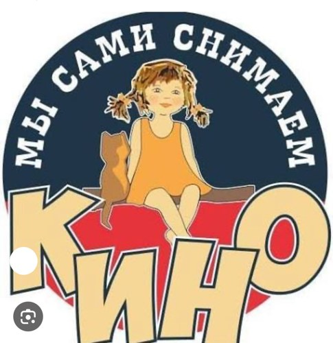

Ассоциация кино- и медиапедагогов
Институт визуальных коммуникаций
Снимаем кино, которое воспитывает. От притчи до премьеры
Миссия«Сохранить человечность в эпоху цифровых технологий»
▶ Смотреть видео об Ассоциации
Семь направлений — одна система
Развитие человека через творчество, киноискусство и визуальные коммуникации. Дети, молодёжь и педагоги осваивают язык современного мира, учатся мыслить образами и создавать собственные произведения средствами кино и новых цифровых технологий.
01
Направление 1
Детское кинотворчество: фестивали и творческие форматы
Дети и подростки создают собственное кино вместе с педагогами-наставниками.
Фестивальное движение · с 2012 года«Мы сами снимаем кино!»Участники не просто присылают фильмы на конкурс, а проходят путь создания собственной кинопритчи вместе с педагогом-наставником.
Драматургия→Съёмка→Монтаж→Кинопритча

🏆 «Мудрость веков»Фестиваль · декабрь · Наро-Фоминск
Заявка
Региональный фестиваль движения🎬 «Киноварь»Фестиваль · май
Заявка на участие
Авторский творческий формат · с 2025 годаКиносочинениеВизуальное мышление: идеи, чувства и смыслы превращаются в экранные образы, символы и метафоры.
Всероссийская акция в формате «Киносочинение»КИНО О ПОБЕДЕАвторские монтажные работы из фрагментов фильмов о войне, Победе, подвиге и памяти. Партнёры: Киноконцерн «Мосфильм», Минкультуры России, Минпросвещения России, МПГУ.Стань участником
Идея→Образ и метафора→Киноязык→Авторское произведение
Летний кинолагерь · Брянская область, Усадьба Княжичи☀️ Летняя киношкола «Покров»Смена, где дети и подростки снимают кино на природе: драматургия, съёмка, монтаж. Работы могут продолжить путь на фестивалях движения.
Партнёрский проект🏅 Чемпионат «КреативМастерс Юниор»Записаться
02
Направление 2
Обучение педагогов: «Кино — в школу!»
Подготовка педагогов и наставников к использованию кино и визуального творчества в работе с детьми и молодёжью. Это кадровая основа всех направлений.
03
Направление 3
Исследования и экспедиции
04
Направление 4
Цифровое творчество: ИИМАТОГРАФ
Лаборатория цифрового творчества: сказочный способ освоить нейросети с нуля — легко и доступно.
05
Направление 5
Профессиональное сообщество
Руководитель
Председатель правления Ассоциации кино- и медиапедагоговЖурналист, издатель, продюсер, кинопедагог. Автор образовательных программ и творческих форматов в области кинообразования, визуальных коммуникаций и цифрового творчества. Около 30 лет в медиа, более 10 лет — в кинообразовании.Портфолио →
Александр Костюченко
Партнёры
Нам доверяют
- Киноконцерн «Мосфильм»
- Министерство культуры РФ
- Министерство просвещения РФ
- МПГУ
- Ассоциация кинопедагогов «Образ»
 Киноуроки в школах России и мира
Киноуроки в школах России и мира
Контакты
Связаться с нами
НКО Ассоциация кино- и медиапедагогов «Институт визуальных коммуникаций»info@cinematoschool.ru · +7 965 354-54-36 · г. МоскваЛицензия на образовательную деятельность № 041574 от 05.07.2021, Рособрнадзор
🔗Все каналы и соцсети
💬Запись на консультацию